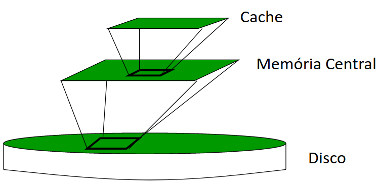
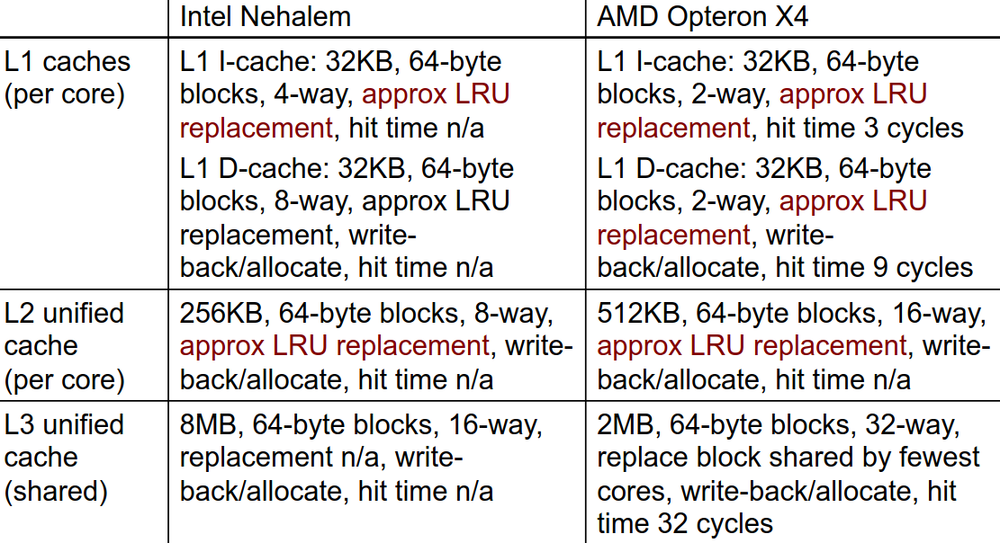
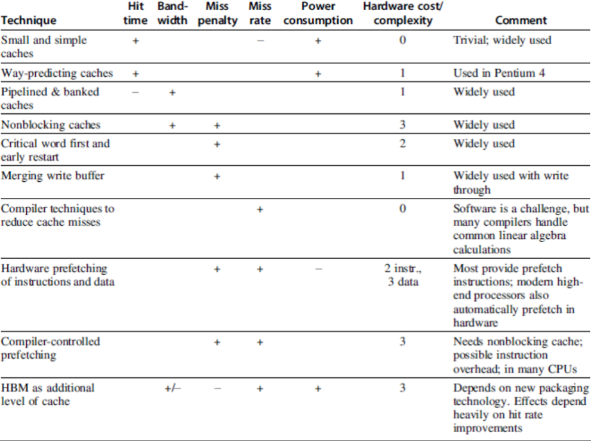
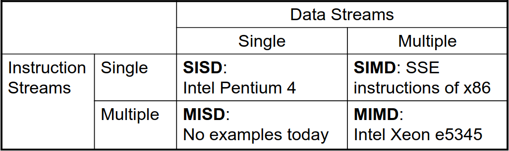
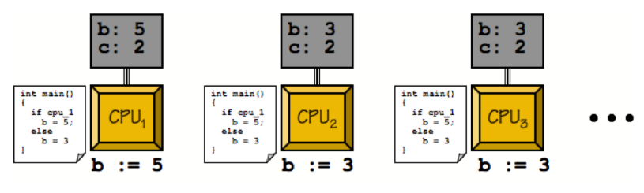
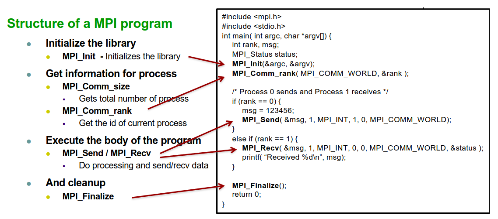
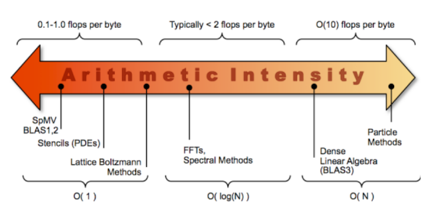
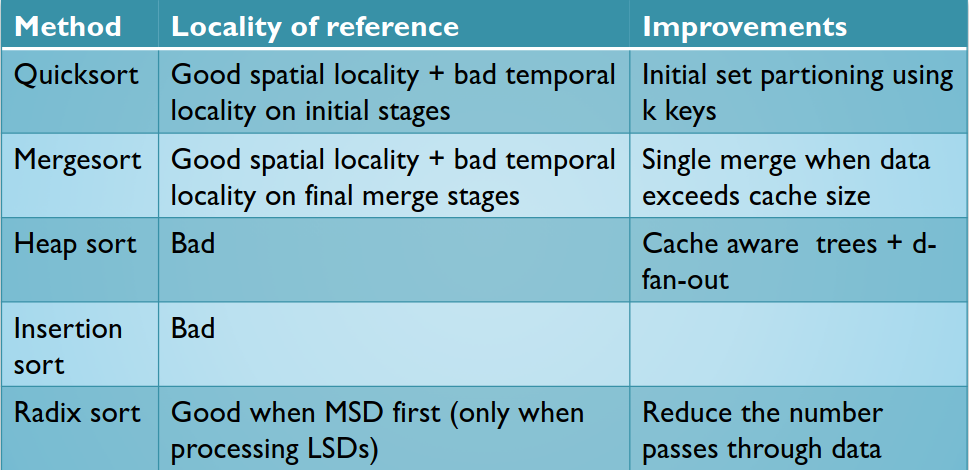
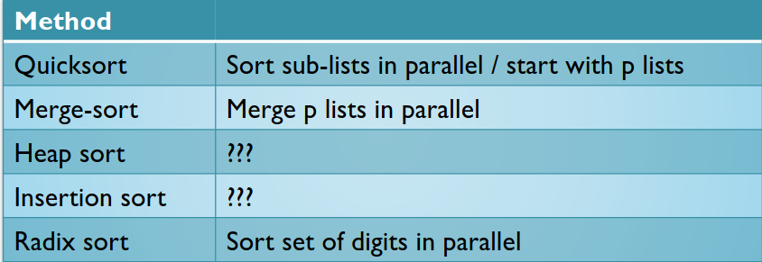

Teórica 01
Foco Principal: Engenharia de Performance
-
Como?
- Como é que funcionam os novos computadores e o que é que o futuro lhes trará?
- Como é que podemos medir a eficiência da execução?
- Como é que funcionam os algoritmos?
- Como é que podemos organizar estruturas de dados?
-
Onde no hardware?
- Código sequencial com ILP (Parelelismo ao nível das instruções);
- Memória hierárquica;
- Paralelismo de processos;
- Paralelismo em threads;
- Aceleradores (GPU, etc...).
É necessário apostar em paralelismo (tanto ao nível do código, como ao nível dos dados), pois o ILP não pode continuar a ser melhorado por questões físicas.
Assim, temos de apostar em novos modelos de paralelismo:
-
Classes de paralelismo em aplicações:
- DLP: Paralelismo ao nível dos dados;
- TLP: Paralelismo ao nível das tasks;
-
Classes de paralelismo arquitetural:
- ILP: Paralelismo ao nível das instruções;
- RLP: Paralelismo ao nível dos pedidos;
- GPUs: Arquiteturas vetoriais e unidades de processamento gráficas;
- Paralelismo ao nível das threads.
Taxonomia de Flynn
- SISD: Stream singular de instruções e stream singular de dados;
- SIMD: Stream singular de instruções e múltiplas streams de dados;
- MISD: Múltiplas streams de instruções e stream singular de dados;
- MIMD: Múltiplas streams de instruções e múltiplas streams de dados.
Como medir a Performance
-
Métricas:
- Largura de Banda ou Throughput:
- Mede a velocidade;
- Quantidade de trabalho num intervalo de tempo.
- Latência:
- Tempo entre o início e o fim de um evento;
- "Quanto tempo demora a responder?".
- Largura de Banda ou Throughput:
-
Speedup de X relativa a Y: \[ \frac{Tempo\ de\ Execucão_{y}}{Tempo\ de\ Execucão_{x}} \]
-
Tempo de Execução:
- Wall Clock Time:
- Inclui os overheads do sistema.
- CPU Time*:
- Apenas o tempo de computação do programa.
- Wall Clock Time:
Princípios de design de computadores
- Tirar vantagem do paralelismo;
- Princípio da Localidade:
- Reutilização de dados e instruções.
- Focar-se no caso comum:
- Lei de Amdahl: \[ speedup\ overall = \frac{t_{exec}\ antigo}{t_{exec}\ novo} = \frac{1}{\sum{\frac{f_i}{s_i}}}, f_i \equiv fracões\ com\ melhoria; s_{i} \equiv speedup\ de\ cada\ funcão \]
Nota:
Melhorar uma porção do programa 90x não é equivalente a um ganho de 90x no programa.
Teórica 02
Otimização de Código Sequencial
Otimização de Desempenho
Fases de Desenvolvimento
- Selecionar o melhor algoritmo;
- Utilizar a análise de complexidade para comprar algoritmos;
- Escrever código legível e fácil de gerir;
- Eliminar bloqueadores de otimizações;
- Medir o perfil de execução.
- Otimar as partes críticas para o desempneho
- Operações repetidas muitas vezes (p.e. ciclos interiores)
- Otimar as partes críticas para o desempneho
- Código com otimizações é mais complexo de ler, manter e de garantir a correção.
Paralelismo ao nível das Instruções
- O objetivo é maximizar o CPI.
- Pipeline CPI:
- Pipeline ideal do CPI +
- Structural Stalls +
- Data Hazard Stalls +
- Control Stalls
- Pipeline CPI:
\[ CPU_{time} = #Instr * CPI * Clk_{cycle} \]
- Paralelismo com bloco básico é limitado
- Tamanho típico do bloco é de 3 a 6 instruções;
- Deve ser otimizado entre branches.
Dependência de Dados
- Paralelismo ao nível dos loops
- Desenrolar o loop estáticamente o dinâmicamente;
- Utilizar o SIMD (processadores vetoriais e GPUs).
- Data Hazards
- Read After Write (RAW);
- Write After Write (WAW);
- Write After Read (WAR).
- Dependências de Controlo
- Ordenação da instrução \( i \) respeitando a instrução da branch.
Previsão da Branch
- Basic 2-bit predictor:
- Para cada branch:
- Prevê se o salto será dado ou não;
- Se a previsão estiver errada 2 vezes consecutivas, altera-a.
- Para cada branch:
- Previsão de correlação:
- Múltiplos 2-bit predictors para cada branch;
- Um para cada combinação possível de outcomes das \( n \) branches precedentes.
- Agendamento Dinâmico:
- Reordena as intruções para reduzir stalls enquanto mantém o flow de dados.
- Especulação Baseada em Hardware:
- Executa instruções de acordo com a execução prevista, mas apenas apresenta os resultados no caso da previsão ser correta.
Multiple Issue
- Uma forma de reduzir o CPI para < 1.

Otimizações Comuns de Compiladores
- Loops
- Identifica as variáveis de indução que são incrementadas/decrementadas por um valor fixo em cada iteração do ciclo (p.e.
j = i * 4 + 1passa aj += 5); - Fissão: parte o loop em múltiplos loops, sendo que cada um será responsável por apenas parte do corpo do loop original;
- Fusão: combina múltiplos loops de forma a reduzir o overhead;
- Inversão: altera o while loop genérico para um do-while;
- Intercâmbio: troca os loops internos com os loops externos;
- Movimenta o invariante do loop de forma a melhorar o desempenho do programa;
- Loop Unrolling: duplica o corpo do loop múltiplas vezes;
- Loop Splitting: parte o loop em múltiplos loops com o mesmo corpo, no entanto, estes iteram em partes contíguas dentro dos limites do indíce pretendido.
- Identifica as variáveis de indução que são incrementadas/decrementadas por um valor fixo em cada iteração do ciclo (p.e.
- Data Flow
- Elimina/Partilha subexpressões comuns;
- Reduz os custos das operações, isto é, as operações muito custosas são substituídas por operações mais "baratas";
- Constant Folding: substitui expressões constantes (p.e.
3 + 4) pelo seu valor final (neste caso,7); - Dead Store Elimination: remove variáveis atribuídas que não voltarão a ser lidas.
- Code Generation
- Alocação de Registos: as variáveis mais utilizadas são mantidas em registos do processador;
- Seleção de Instruções: seleciona 1 forma de múltiplas disponíveis para efetuar uma operação;
- Agendamento de Instruções: evita pipeline stalls;
- Re-materialização: Recalcula um valor, ao invés de o ir buscar à memória.
- Outras
- Bounds-checking elimination;
- Reordenação de blocos de código: altera a ordem de blocos básicos;
- Eliminição de código inutilizado;
- Inline Expansion: insere o corpo de uma função na chamada à função.
- Limitações
- Memory aliasing e efeitos secundários das funções;
- Tipicamente, os compiladores não tentam melhorar a complexidade dos algoritmos;
- Tipicamente, os compiladores apenas lidam com uma parte do programa de cada vez;
- Pode gerar-se um overhead no tempo de compilação devido às otimizações do compilador.
Hierarquia de Memória
Hiato Processador-Memória
- Para cada instrução, deve ser feito o seguinte processo:
- Ler Instrução;
- Ler Operando;
- Escrever Resultado.
- O hiato processador-memória diz-nos:
- "A memória é incapaz de alimentar o processador com instruções e dados com uma taxa suficiente de forma a mantê-lo constantemente ocupado".
- A causa para este problema é a diferente taxa de aumento do desempenho entre os processadores e a memória nos últimos anos;
- Trata-se de um dos principais obstáculos à melhoria do desempenho dos sistemas de computação.
Princípio da Localidade
- Permite acelerar os acessos à memória através de uma hierarquia;
- "Os programas tendem a aceder a uma porção limitada de memória num dado período de tempo".
- Permite utilizar memória mais rápida para armazenar a informação usada mais frequentemente/recentemente;
- Permite tirar partido da largura de banda, uma vez que a informação transferida entre diferentes níveis da hierarquia é efetuada por blocos.
Localidade Temporal
Um elemento de memória acedido pelo processador será, com grande probabilidade, acedido de novo num futuro próximo;
- Exemplos:
- Tanto as instruções dentro dos ciclos, como as variáveis usadas como contadores de ciclos, são acedidas repetidamente em curtos intervalos de tempo.
- Consequência:
- A 1ª vez que um elemento de memória é acedido deve ser lido do nível mais baixo (p.e. da memória central);
- Da 2ª vez que é acedido, no entanto, é muito provável que este se encontre em cache, evitando-se assim o tempo de leitura da memória central.
Localidade Espacial
Se um elemento de memória é acedido pelo CPU, então elementos com endereços na sua proximidade serão, com grande probabilidade, acedidos num futuro próximo.
- Exemplos:
- As instruções do programa são, normalmente, acedidas em sequência, assim como, na maior parte dos programas, os elementos de vetores/matrizes.
- Consequência:
- A 1ª vez que um elemento de memória é acedido, deve ser lido do nível mais baixo (p.e. memória central), no entanto, não será lido sozinho, mas sim com um bloco de elementos com endereços na sua vizinhança.
- Se o processador, nos próximos ciclos, aceder a um endereço vizinho do anterior (p.e. próxima instrução ou próximo elemento de um vetor), a probabiliade desse elemento já estar em cache é elevada.
Inclusão
- Os dados contidos num nível mais próximo do processador são um subconjunto dos dados contidos no nível anterior;
- O nível mais baixo contém a totalidade dos dados;
- Os dados são copiados entre níveis em blocos.

Terminologia
- Linha: A cache encontra-se dividida em linhas. Cada linha terá o seu endereço (índice) e tem a capacidade de um bloco;
- Bloco: Quantidade de informação que é transferida de cada vez da memória central para a cache (ou entre níveis de cache). É igual à capacidade da linha;
- Hit: Diz-se que ocorreu um hit quando o elemento de memória acedido pelo CPU se encontra em cache;
- Miss: Diz-se que ocorreu um miss quando o elemento de memória acedido pela CPU não se encontra em cache, sendo necessário lê-lo do nível inferior da hierarquia.
- Hit Rate: Percentagem de hits ocorridos relativamente ao total de acessos à memória;
- Miss Rate: Percentagem de misses ocorridos relativamente ao total de acessos à memória. (\( Miss\ Rate\ = 1 - hit\ rate \));
- Hit Time: Tempo necessário para aceder à cache, incluindo o tempo necessário para determinar se o elemento a que o CPU está a aceder se encontra, ou não, em cache;
- Miss Penalty: Tempo necessário para carregar um bloco da memória central (ou de um nível inferior) para a cache quando ocorre um miss.
Causas de Misses
- Os 3 C's:
- Obrigatória;
- Primeira referência ao bloco.
- Capacidade;
- Blocos que são descartados e mais tarde são necessários.
- Conflito;
- O programa faz repetidas referências a endereços de diferentes blocos de forma a mapear a mesma localização em cache.
- Obrigatória;
- Coerência:
- Diferentes processadores devem ver o mesmo valor na mesma localização;
- Duas fontes: true-sharing e false-sharing
Multilevel Caches
De forma a evitar o máximo de misses possível, opta-se por uma arquitetura de caches multilevel. Assim, tem-se os seguintes níveis:
- Cache primária presa à CPU;
- Muito pequena, mas rápida.
- Cache de nível 2;
- Serve os misses da cache de nível 1;
- Maior que a anterior, mas mais lenta, no entanto, mais rápida que a seguinte ou que a memória principal.
- Cache de nível 3 (em alguns casos, não existe e poderá já ser a memória principal);
- Serve os misses da cache de nível 2;
- Maior que a anterior, mas mais lenta, sendo mais rápida que a memória principal.
- Memória Principal.
- Serve os misses da cache de nível 3 ou, caso esta não exista, os misses da cache de nível 2.

Desempenho
\[ CPU_{exec-time}=(CPU_{clock-cycles} + Mem_{stall-cycles}) \times Clock\ cycle\ time \] \[ CPU_{exec-time}=(IC \times CPI_{CPU} + \frac{Mem_{stall-cycles}}{Instr}) \times Clock\ cycle\ time \]
- Com a introdução de uma cache single-level: \[ Mem_{stall-cycles} = IC \times \dots Miss\ rate \dots Mem\ accesses\ \dots Miss\ penalty \dots \] \[ Mem_{stall-cycles} = IC \times \frac{Misses}{Instruction} \times Miss\ Penalty \] \[ \frac{Misses}{Instruction} = \frac{Miss\ rate \times Memory\ accesses}{Instruction\ Count} = Miss\ Rate \times \frac{Memory\ Accesses}{Instruction} \]
Para cada nível \( i \) adicional de cache:
\[ Mem_{accesses}{level{i}} = \frac{Misses}{Instruction_{level_{i - 1}}} \] \[ Miss_{penalty}{level{i}} = (Hit\ rate \times Hit\ time \times Miss\ rate \times Miss\ penalty){level{i + 1}} \]
Miss Rates
-
Local Miss Rate
- Dado pelo número de misses na cache dividido pelo total de acessos à cache;
- Para o primeiro nível será igual ao \( Miss\ rate_{L1} \) e para o segundo será \( Miss\ rate_{L2} \).
-
Global Miss Rate
- Dado pelo número de misses na cache dividido pelo total de acessos à memória gerados pela PU;
- Para o primeiro nível será igual ao \( Miss\ rate_{L1} \), no entanto, para o segundo já será \( Miss\ rate_{L1} \times Miss\ rate_{L2} \).
Desempenho
Como é que a hierarquia de memória influencia o \( T_{exec} \)?
- Cada acesso à memória irá originar ciclos adicionais na execução do programa (\( \#CC_{MEM} \)) devido aos misses:
\[ T_{exec} = ( \#CC + \#CC_{MEM}) \times T_{CC} \]
- Cada miss implicará um aumento do \( \#CC \) em ciclos de miss penalty, logo:
\[ \#CC_{MEM} = no.\ miss \times miss\ penalty \]
Sendo que, o \( no.\ miss \) será dado por:
\[ miss\ rate \times no.\ acessos\ mem \]
- Assim, visto que \( \#CC = \#I \times CPI \), temos que:
\[ T_{exec} = \#I \times (CPI_{CPU} + CPI_{MEM}) \times T_{CC} \]
-
Em que:
- \( CPI_{CPU} \): número de ciclos que o processador precisa, em média, para executar cada instrução;
- \( CPI_{MEM} \): número de ciclos que o processador precisa de parar, em média, para esperar por dados da memória, visto que não foi capaz de encontrar estes em cache. Vulgarmente, designam-se por memory stall cycles ou wait states.
-
Podemos calcular o \( CPI_{MEM} \) da seguinte forma:
\[ CPI_{MEM} = \% acessos\ Mem \times miss\ rate \times miss\ penalty \]
- De notar que os acessos à memória devem-se a:
- Acesso a dados (instruções de Load ou Store);
- Busca de instruções.
- Como estes têm comportamentos diferentes, usam-se percentagens diferentes:
- Dados: Apenas uma determinada percentagem de instruções irá aceder à memória (\( \%Mem \)), pelo que, \( missrate_D \) referir-se-á ao acesso a dados;
- Instruções: Todas as instruções são lidas da memória, logo a percentagem de acesso à memória será de 100%, \( missrate_I \) referir-se-á ao acesso às instruções;
- Geralmente, a \( missrate_I \) é menor que a \( missrate_D \) devido à utilização da localidade espacial.
- Temos, então:
\[ CPI_{MEM} = (missrate_I + \% Mem \times missrate_D) \times misspenalty \]
Coerência na Cache
- Coerência
- Todas as leituras de um processador devem retornar o valor escrito mais recentemente;
- Escritas para a mesma localização por dois processadores devem ser vistas na mesma ordem por todos os processadores;
- Ou seja, a coerência deverá definir o comportamento para escritas e leituras na mesma localização da memória.
- Consistência
- Ocorre quando um valor escrito deverá ser devolvido por uma leitura;
- Se um processador escrever numa localização A e, posteriormente, numa localização B, qualquer processador que vir o novo valor de B, deverá também ver o valor de A;
- Ou seja, a consistência deverá definir o comportamento para escritas e leituras respeitando o acesso a outras localizações de memórias.
Forçar a Coerência
- Uma cache coerente providencia:
- Migrações: movimentos de dados;
- Replicações: múltiplas cópias dos dados.
- Protocolos para implementar coerência em caches:
- Directory Based
- Manter o estado partilhado de cada bloco numa única localização;
- Snooping
- Cada core deverá seguir o estado de partilha de cada bloco.
- Directory Based
Otimizações Básicas
- Maior tamanho dos blocos;
- Reduz o número de misses obrigatórias;
- Aumenta a capacidade e as misses por conflito, bem como a miss penalty.
- Aumentar o tamanho total da cache para reduzir a miss rate;
- Aumenta o hit time e o consumo energético.
- Maior associatividade;
- Reduz as misses por conflito;
- Aumenta o hit time e o consumo energético.
- Maior número de níveis de cache;
- Reduz o tempo médio de acesso à memória.
- Dar prioridade a misses de leitura ao invés de misses de escrita;
- Reduz a miss penalty.
- Evitar a tradução de endereços ao fazer indexação na cache:
- Reduz o hit time.
Tecnologias de Memória e Otimizações
- Métricas de desempenho:
- Latência é uma preocupação da cache;
- Largura de banda é uma preocupação dos multi-processadores e I/O;
- Tempo de acesso;
- Tempo entre um pedido de leitura e a chegada da word pretendida.
- Tempo de ciclo.
- Tempo mínimo entre pedidos não relacionados à memória.
- A memória SRAM tem uma baixa latência, pelo que é utilizada para cache;
- Organizando os chips de DRAM em diversas pilhas providenciará uma grande largura de banda que deve ser utilizada para a memória principal.
- SRAM:
- Precisa de pouca energia para reter o bit;
- Precisa de 6 transístores por bit.
- DRAM:
- Deve ser reescrita depois de lida;
- Deve ser atualizada de forma periódica;
- +/- 8ms (cerca de 5% do tempo);
- Cada linha pode ser atualizada em simultâneo.
- Um transístor por bit;
- As linhas de endereços são multiplexadas.
- Metade superior do endereço: row access strobe (RAS);
- Metade inferior do endereço: column access strobe (CAS).
Memória Flash
- Tipo de EEPROM;
- Tipos:
- NAND (mais densa);
- NOR (mais rápida).
Otimizações Avançadas
- Reduzir o hit time;
- Caches de primeiro nível mais pequenas e simples;
- Implementação de way predict.
- Especulativamente, seleciona um caminho dos disponíveis antes de iniciar um acesso normal à cache. Ao seguir apenas o caminho previsto, em vez de todos os disponíveis, poupará a nível energético.
- Aumentar a largura de banda;
- Implementação de pipelined caches, multibanked caches, non-blocking caches.
- Reduzir a miss penalty;
- Ter, primeiramente, a critical word, juntar os buffers de escrita.
- Reduzir a miss rate;
- Otimizações do compilador.
- Reduzir a miss penalty ou a miss rate através de paralelismo.
- Hardware ou compilador fazem prefetching.
Resumo

Paralelismo de Dados e Multithreading em Uniprocessadores
Taxonomia de Flynn

- SISD: Single Instruction, Single Data;
- SIMD: Single Instruction, Multiple Data;
- MISD: Multiple Instruction, Single Data;
- MIMD: Multiple Instruction, Multiple Data;
- SPMD: Single Program, Multiple Data:
- Programa paralelo num computador MIMD;
- Precisa de código condicional para diferentes processadores.
Introdução
- Arquiteturas SIMD permitem que se explore, de forma significativa, paralelismo ao nível dos dados para:
- Computação científica orientada a matrizes;
- Processamento de mídias;
- Algoritmos de Machine Learning.
- Além disso, estas arquiteturas são mais eficientes que as MIMD a nível energético;
- Precisam de dar fetch a uma única instrução por operação de dados;
- Isto torna estas arquiteturas atrativas para dispositivos móveis pessoais.
- Por fim, esta arquitetura ainda permite que o programador tenha um pensamento sequencial.
Paralelismo SIMD
- Arquiteturas vetoriais;
- Extensões SIMD;
- É uma extensão ao instruction set do SIMD para arquiteturas x86 desenhada pela Intel;
- Contém 70 novas instruções, sendo que grande parte trabalha com dados de single precision floating-points;
- Estas instruções (e as instruções do SIMD), têm um grande ganho de desempenho quando efetuam exatamente as mesmas operações em múltiplos objetos de dados. Geralmente, são utilizadas para processamento de sinais digitais e para processamento gráfico.
- GPUs;
- Para processadores x86:
- Expectável que se tenha 2 cores adicionais por ano;
- A largura é expectável que duplique a cada 4 anos;
- Potencial ganho de velocidade: 2x a velocidade do MIMD.
Arquiteturas Vetoriais
- Ideia base:
- Lê conjuntos de elementos de dados (da memória) para registos vetoriais;
- Efetua operações sobre esses registos;
- Dispersa os resultados obtidos de volta à memória (scatter).
- Os registos são controlados pelo compilador.
- Utilizado para esconder a latência da memória;
- Alavanca a largura de banda da memória.
VMIPS
- Exemplo: RV64V
- Tem 32 registos vetoriais de 64 bits;
- O ficheiro de registo tem 16 portas de leitura e 8 de escrita.
- Unidades funcionais vetoriais;
- Completamente em pipeline;
- Deteta dependências de dados e de controlo.
- Unidade vetorial de load-store;
- Completamente em pipeline;
- Uma word por clock cycle após a latência inicial.
- Registos escalares.
- 31 registos de propósito geral;
- 32 registos de floating-point.
- Tem 32 registos vetoriais de 64 bits;
Desafios
- Tempo de arranque;
- Latência de uma unidade funcional vetorial é bastante alta.
- Melhorias possíveis:
- Mais do que 1 elemento por clock cycle;
- Non-64 wide vectors;
- Vetorizar o código de if-statements;
- Otimizações ao sistema de memória de forma a suportar processadores vetoriais;
- Múltiplas matrizes dimensionais (acessos à memória sem passos unitários);
- Matrizes dispersas;
- Programar de forma específica para um computador vetorial.
Programação Vetorial
- Os compiladores são elementos chave para dar dicas sobre se uma secção de código irá vetorizar ou não;
- Devemos verificar se as iterações entre loops terão depedências de dados e/ou if-statements, pois, caso contrário, a vetorização será comprometida;
- O custo de arquiteturas vetoriais é muito elevado, no entanto existem algumas variantes como extensões a processadores escalares, mas:
- Não suportam acessos não unitários à memória, pelo que se deve ter cuidado na definição de estruturas de dados;
- Também não suportam o mask register, gather-scatter, etc...
Extensões a SIMD
- Aplicações de mídia operam em tipos de dados mais pequenos que tamanho nativo de uma word;
- Limitações comparadas a arquiteturas vetoriais:
- Número de operando de dados codificado no op code;
- Não há modos de endereçamento sofisticados;
- Não há mask register.
Implementações SIMD
- Da Intel:
- MMX (1996);
- Streaming SIMD Extensions (SSE) (1999);
- Advanced Vector eXtensions (AVX) (2010...);
- Operações em 8 32-bit fp ou 4 64-bit fp (inteiros apenas no AVX-2);
- Largura de 512-bits no AVX-512 (e no Larrabee e Phi-KNC).
- Os operandos têm de estar em localizações de memória consecutivas e alinhadas!
- AMD Zen/Epyc: semelhante ao AVX-2;
- Arquitetura ARMv8 (64-bit): NEON e SVE.
Extensões Vetoriais
- Arquiteturas vetoriais/extensões SIMD são abordagens híbridas:
- Mistura capacidades de operações (super)escalares + vetoriais num único dispositivo;
- Abordagem altamente pipelined de forma a reduzir a penalty de acesso à memória;
- Acesso fechado à memória partilhada provoca uma menor latência.
- Evolução destas arquiteturas:
- Aceleradores de computação otimizados para number crunching (GPUs);
- Adição do suporte a operações de multiplicação + acumulação para matrizes;
- Muitas aplicações utilizam computações com matrizes, nomeadamente o dot product;
- Os produtores, muitas vezes, chamam a esta extensão Tensor Processing Unit (TPU).
- Suporte para half-precision FP e inteiros de 8 bits.
- Algoritmos de ML que utilizam redes neuronais precisam de computacionar um modelo durante a fase de treino, onde produtos de matrizes intensivos são feitos sem necessitarem de grande precisão.
Unicore Multithreading
- Corre múltiplas threads numa execução em paralelo.
- Partilha todos os recursos, exceto registos replicados, PC/IP, etc...
- Troca rapidamente entre threads.
- Abordagens:
- Fine-grain Multithreading/time-multiplexed multithreading
- Troca de threads após cada clock cycle;
- Intercala a execução de instruções;
- Se uma thread parar, as outras são executadas.
- Coarse-grain Multithreading
- Só troca de thread em grandes paragens (p.e. uma miss na cache de nível 2);
- Simplifica o hardware, mas não esconde pequenas paragens (p.e. para dependências de dados).
- Simultaneous multithreading
- O processador agenda os múltiplos problemas de forma dinâmica:
- Agenda instruções das múltiplas threads;
- As instruções de threads independentes são executadas quando as unidades funcionais estiverem disponíveis;
- Entre threads, as dependências são geridas através do agendamento e renomeação de registos.
- Exemplo: Intel do Pentium-4 HT.
- Duas threads: registos duplicados, unidade funcional e caches partilhadas.
- O processador agenda os múltiplos problemas de forma dinâmica:
- Fine-grain Multithreading/time-multiplexed multithreading
Aceleradores de Computação: GPU e CUDA
Aceleradores de Computação
- O melhor acelerador para number crunching ou para computação intensiva de vetores/matrizes é a GPU;
- Temos ainda outros aceleradores comuns:
- DSP: Digital Signal Processor;
- Usado, maioritariamente, em equipamentos de telecomunicações.
- TPU: Tensor Unit Processing Units;
- Otimizado para operações com tensores (vetores e matrizes n-dimensionais), popularizado em aplicações AI, nomeadamente para condução autónoma.
- FPGA: Field Programmable Gate Arrays.
- Hardware/Software reconfigurável;
- Pode ser configurado em runtime de forma a comportar-se como uma dada especificação.
- DSP: Digital Signal Processor;
Graphical Processing Units (GPU)
- Ideia base:
- Modelos de execução heterogéneos;
- A CPU será o host e a GPU o device.
- Deve desenvolver-se um programa numa linguagem semelhante a C para a GPU;
- Une todas as formas de paralelismo da GPU como uma thread CUDA;
- O modelo de programação segue o SIMT (Single Instruction Multiple Thread).
- Modelos de execução heterogéneos;
Arquitetura de uma GPU da Nvidia
- Semelhanças com máquinas vetoriais:
- Trabalha bem com problemas de paralelismo ao nível dos dados;
- Aplica o scatter-gather às transferências;
- Aplica masks aos registos;
- Tem grandes ficheiros de registo.
- Diferenças:
- Não tem um processador escalar;
- Utiliza multithreading de forma a esconder a latência da memória;
- Tem múltiplas unidades funcionais, mas poucas unidades em pipeline, trabalhando como um processador vetorial.
Terminologia
- Cada thread está limitada a 64 registos;
- Grupos de 32 threads estão combinados numa thread SIMD, também chamada warp;
- Mapeada em 16 pistas físicas.
- Até 32 warps são agendados num único processador SIMD (SM);
- Cada warp terá o seu próprio PC;
- O agente responsável pelo agendamento das threads utiliza um scoreboard de forma a expedir as threads;
- Por definição, não existem dependências de dados entre warps;
- Ao expedir os warps para pipelines, esconderá a latência da memória.
- Cada processador SIMD (SM):
- Tem 32 pistas SIMD;
- É largo e mais raso quando comparado com processadores vetoriais.
Estruturas de Memória de uma GPU da Nvidia
- Cada pista SIMD tem uma secção privada de um off-chip DRAM;
- "Memória Privada" (na terminologia da Nvidia, Local Memory);
- Contém um stack frame, spilling registers e variáveis privadas.
- Cada processador SIMD multithreaded (na terminologia da Nvidia, SM) também possui memória local (na termionologia da Nvidia, Shared Memory);
- Partilhada pelas pistas SIMD/threads num dado bloco.
- A memória partilhada pelos processadores SIMD é memória da GPU e o off-chip DRAM (na terminologia da Nvidia, Global Memory).
- O host poderá ler e escrever na memória da GPU.
Inovações da Arquitetura Pascal (maio 2016)
- Cada processador SIMD tem:
- Dois ou 4 agentes de agendamento de threads SIMD, duas unidades de expedição de instruções;
- 4 pistas de 16 SIMD, 16 unidades de load-store e 16 unidades de funções especiais;
- 2 threads de instruções SIMD são agendadas a cada 2 clock cycles.
- Introdução de:
- Fast single-precision;
- Doube-precision;
- Half-precision.
- High Bandwith Memory 2 (HBM2) com 732 GB/s;
- NVLink entre múltiplas GPUs (20 GB/s em cada direção);
- Memória virtual e paging support unificados.
Arquiteturas Vetoriais vs GPUs
- Processador SIMD análogo ao processador vetorial, ambos têm MIMD;
- Registos:
- O ficheiro de registo RV64V é capaz de manter vetores inteiros, enquanto que a GPU irá distribuir os vetores em registos das pistas SIMD;
- O RV64V tem 32 registos de vetores de 32 elementos (total de 1024 elementos), já a GPU tem 256 registos com 32 elementos (total de 8000 elementos);
- RV64V tem 2 a 8 pistas com o tamanho do vetor a ser de 32, e o chime terá entre 4 a 16 ciclos, já no proocessador SIMD o chime terá 2 a 4 ciclos;
- quick reminder: o chime é uma unidade de tempo que demora a executar um convoy;
- convoy: um conjunto de instruções vetoriais que, potencialmente, poderá começar a execução em conjunto num período de relógio.
- quick reminder: o chime é uma unidade de tempo que demora a executar um convoy;
- O loop vetorizado da GPU é uma grelha;
- Todas as instruções de leitura da GPU são gather e todas as instruções de guardar são scatter.
Arquiteturas SIMD vs GPUs
- As GPUs possuem mais pistas SIMD;
- As GPUs têm hardware para suportar mais threads;
- Ambas têm um rácio de 2:1 entre o desempenho entre double-precision e single-precision;
- Ambas têm endereços de 64 bits, mas as GPUs têm menor memória;
- Arquiteturas SIMD não têm suporte para instruções scatter-gather.
Modelo de programação CUDA
- Compute Unified Device Architecture;
- Desenhado para:
- hosts com CPUs multicore acoplados a dispositivos many-core onde:
- os dispositivos têm um grande paralelismo SIMD/SIMT;
- o host e o dispositivo não partilham memória.
- hosts com CPUs multicore acoplados a dispositivos many-core onde:
- Providencia:
- uma abstração de threads de forma a lidar com o SIMD;
- sincronização e partilha de dados entre pequenos grupos de threads.
- Os programas em CUDA são escritos em C com extensões;
- O OpenCL é inspirado no CUDA, mas o hardware e o software não têm um produtor específico.
- O modelo de programação é, essencialmente, idêntico.
Dispositivos CUDA e Threads
- Um dispositivo de computação:
- é um co-processador para a CPU ou host;
- tem a sua própria DRAM (chamada, device memory);
- corre múltiplas threads em paralelo;
- tipicamente, é uma GPU, mas também ser qualquer outro tipo de dispositivo de processamento em paralelo.
- As porções de dados paralelos de uma aplicação são expressas com kernels do dispostivo que irão correr em múltiplas threads (SIMT);
- Diferenças entre threads de GPU e threads de CPU:
- threads de GPU são extremamente leves;
- pouco overhead de criação, mas requerem um grande banco de registos.
- a GPU precisa de milhares de threads para apresentar a sua eficiência mãxima;
- por outro lado, os CPUs multicore precisam de poucas.
- threads de GPU são extremamente leves;
Modelo básico de CUDA: Single Program, Multiple Data (SPMD)
- CUDA integrado na CPU + aplicação de um programa em C na GPU;
- Código sequencial C executa na CPU;
- Kernel paralelo C executa em blocos de threads na GPU.
SPMD + SIMT/SIMD
- Hierarquia:
- Dispostivo \( \rightarrow \) Grelhas;
- Grelhas \( \rightarrow \) Blocos;
- Blocos \( \rightarrow \) Warps;
- Warps \( \rightarrow \) Threads.
- Um único kernel corre em múltiplos blocos (SPMD);
- As threads de um warp são executadas numa forma lock-step denominada single instruction, multiple thread (SIMT);
- Instruções singulares são executas em múltiplas threads (SIMD);
- O tamanho do warp define a granularidade do SIMD (32 threads).
- A sincronização dentro de um bloco utiliza a memória partilhada.
Grelha Computacional: Block IDs e Thread IDs
- Um kernel corre numa grelha computacional de blocos de threads;
- As threads utilizam memória global partilhada.
- Cada thread utiliza IDs para decidir em que dados deve trabalhar;
- ID do bloco: 1D ou 2D;
- ID da thread: 1D, 2D ou 3D.
- Um bloco de threads é um batch de threads que podem cooperar entre si:
- Sincronizam a sua execução com uma barreira;
- Partilham dados de forma eficiente através de memória partilhada de baixa latência;
- Duas threads de dois diferentes blocos não podem cooperar entre si.
Terminologia (e terminologia da Nvidia)
- Threads de instruções SIMD (warps);
- Cada uma tem o seu próprio Instruction Pointer (até 48/64 por processador SIMD);
- O agente responsável por agendar threads utiliza scoreboards para as expedir;
- Não existem dependências de dados entre threads;
- As threads são organizadas em blocos e executadas em grupos de 32 threads (bloco de threads).
- Os blocos estão organizados numa grelha.
- O agente responsável por agendar os thread blocks agenda-os para os processadores SIMD (Streaming Multiprocessors);
- Em cada processador SIMD:
- 32 pistas SIMD (thread processors);
- Mais largos e rasos quando comparados a processadores vetoriais.
Bloco de Threads CUDA
- O programador declara o bloco (de threads):
- tamanho irá variar entre 1 a 512 threads concorrentes;
- terá um formato 1D, 2D ou 3D;
- dimensões dos blocos em threads.
- Todos as threads num bloco executam o mesmo programa de thread;
- As threads partilham os dados e sincronizam-se enquanto partilham o seu trabalho;
- As threads têm números de identificação dentro de um bloco;
- Os programas de threads utilizam os thread ID de forma a selecionar os trabalhos e endereçar os dados partilhados.
float x = input[threadID];
float y = func(x);
output[threadID] = y;
Partilha de memória partilhada
- Memória Local (por thread):
- Privada por thread;
- Variáveis automáticas, register spill.
- quick reminder: ocorre register spill quando os registos da CPU estão cheios, pelo que o conteúdo tem de ser, temporariamente, guardado em memória.
- Memória Partilhada (por bloco):
- Partilhada por threads no mesmo bloco;
- Comunicação inter-threads.
- Memória Global (por aplicação):
- Partilhada por todas as threads;
- Comunicação inter-grelhas.
Overview do modelo de memória CUDA
- Cada thread pode:
- Ler/Escrever per-thread em registos;
- Ler/Escrever per-thread em memória local;
- Ler/Escrever per-block em memória partilhada;
- Ler/Escrever per-grid em memória global;
- Ler apenas per-grid em memória constante;
- Ler apenas per-grid em memória de textura.
- O host pode ler e escrever em memória global, constante ou de textura.
Implementação em Hardware: Arquitetura de Memória
- Memória do Dispositivo (DRAM):
- Lenta (2 a 300 ciclos);
- Em memória local, global, constante ou de textura.
- On-chip memory:
- Rápida (1 ciclo);
- Registos, memória partilha e cache de constantes/texturas.
Introdução à Programação com Memória Partilhada
Níveis de Paralelismo (Hardware e Software)
- Instrução (ILP):
- Execução de múltiplas instruções de um programa em paralelo;
- Processamento vetorial;
- Explorado pelo hardware atual;
- Limitado pelas dependências de dados/controlo do programa.
- Tarefas/Fios de Execução
- Múltiplos fluxos de instruções de um mesmo programa executam em paralelo;
- Limitado pelas dependências e características do algoritmo.
- Processos
- Múltiplos processos de um mesmo programa/vários programas.
Desenvolvimento de Aplicações Paralelas
Partição do problema e dos dados a processar:
- Identifica oportunidades de paralelismo:
- Define um elevado número de tarefas (de grão fino);
- Pode obter várias decomposições alternativas.
- Duas vertentes complementares na identificação das tarefas:
- Decomposição dos Dados: identifica dados que podem ser processados em paralelo;
- foca-se nos dados e processar e na sua divisão em conjuntos que possam ser processados em paralelo.
- Decomposição Funcional: identifica fases do algoritmo que podem ser efetuadas em paralelo.
- foca-se no processamento a realizar, dividindo-o em tarefas independentes.
- Decomposição dos Dados: identifica dados que podem ser processados em paralelo;
- A partição deverá obter um número de tarefas, pelo menos, uma ordem de magnitude superior ao número de unidades de processamento.
- Introduz flexibilidade nas fases posteriores do desenvolvimento.
- Tarefas de dimensões idênticas facilitam a distribuição da carga;
- O número de tarefas deve aumentar em conformidade com a dimensão do problema.
Programação Paralela com Memória Partilhada
Especificação de Concorrência/Paralelismo
- Processos
- Usados para tarefas não correlacionadas;
- Por exemplo, um programa.
- Contém espaço de endereçamento;
- Que é protegido de outros processos.
- Efetua switching ao nível do kernel;
- Troca entre diferentes processos ou tarefas que estão a ser geridas pelo kernel.
- Cada processo tem, pelo menos, uma thread.
- Usados para tarefas não correlacionadas;
- Threads
- São parte do mesmo trabalho;
- Partilham espaço de endereçamento, código, dados e ficheiros;
- Efetuam switching ao nível do utilizador e do kernel.
Processos/Threads vs Tasks
- Task: sequência de instruções;
- Em Java: Runnable Object;
- Thread/Processo: execução de uma task num dado contexto;
- Em Java: Thread.
- Processador/core: hardware que corre uma thread/processo.
Medição e Otimização de Desempenho em Memória Partilhada
Desempenho em Aplicações Paralelas
- Qual é a definição de desempenho?
- Existem múltiplas alternativas.
- Tempo de execução, escalabilidade, requisitos de memória, latência, débito, custos, portabilidade, potencial de reutilização, etc...
- A importância de cada um, dependerá da aplicação em concreto.
- A medida mais comum das aplicações paralelas é o tempo de execução ou speed-up.
- Temos da melhor implementação sequencial vs Tempo da versão paralela;
- Forte análise da escalabilidade:
- aumento do speed-up com a PU para um problema com um tamanho fixo de dados;
- O speed-up ideal é proporcional à PU.
- Fraca análise da escalabilidade:
- Aumentam o problema do tamanho de dados assim que o número de PUs aumenta;
- Idealmente, o tempo de execução dever-se-ia manter constante.
Lei de Amdhal (Forte Análise da Escalabilidade)
- Mede o tempo da versão paralela (\( T_{par} \)) assim que o número de PUs aumenta;
- O \( T_{seq} \) pode ser dividida em:
- Tempo a fazer trabalho não paralelizável (trabalho sequencial);
- Tempo a fazer trabalho paralelizável.
- A fração do trabalho não paralelizável irá limitar o speed-up máximo;
- \( P \) \( \rightarrow \) número de PUs;
- \( f \) \( \rightarrow \) fração sequencial.
\[ S_P \leq \frac{1}{f + (1 - f) / P} \] \[ Max_{speedup} = \frac{1}{serial\ fraction\ of\ work} \]
- Isto reforça a ideia que devemos preferir algoritmos que suportem uma execução paralela: think parallel.
Anomalias de Speed-up
- Super-linear (o ganho é maior que o número de PUs): em muitos casos isto deve-se aos efeitos da cache.
Lei de Gustafson (Fraca Análise da Escalabilidade)
- Aumenta o tamanho do problema consoante o número de PUs aumenta;
- Grandes recursos computacionais, geralmente, são utilizados para problemas de grandes dimensões.
- A fração de trabalho sequencial, geralmente, diminui com o tamanho do problema.
Estudos Experimentais
- Perfil de execução sequencial:
- Identifica hot-spots de aplicações:
- Funções que levam mais tempo a executar.
- Podem ser implementadas por ferramentas específicas ou instrumentalizar diretamente o código:
- Existe sempre overhead introduzido na base de aplicação.
- Identifica hot-spots de aplicações:
- Perfil de execução paralela:
- Recolha dados de desempenho per-thread;
- Mais difícil de interpretar.
- Os hot-spots podem alterar enquanto a aplicação é melhorada.
Técnicas para fazer profiling
- Polling (sampling)
- A aplicação é, periodicamente, interrompida para colecionar dados de desempenho;
- Exemplos:
gprofeperf record.
- Instrumentation
- O código é introduzido (pelo programador ou ferramentas) para colecionar dados de desempenho acerca de eventos úteis:
- Tende a produzir melhores resultados, mas mais overhead.
- Exemplos:
Valgrind.
- O código é introduzido (pelo programador ou ferramentas) para colecionar dados de desempenho acerca de eventos úteis:
Problemas de Escalabilidade na Memória Partilhada
Algumas Razões para as Aplicações não terem o Speed-Up ideal?
- Trabalho Sequencial:
- % de trabalho sequencial (Lei de Amdahl);
- Barreira de Memória.
- Serializa os acessos à memória.
- Overhead de Paralelismo:
- Granularidade de Paralelismo/Task.
- Trabalho adicional feito em aplicações paralelas (gestão de tarefas, computações redundantes, etc...).
- Granularidade de Paralelismo/Task.
- Overhead de Paralelismo e Trabalho Sequencial/Tempo em Idle:
- Overhead de Sincronização.
- Também deveria serializar a execução (p.e. critical).
- Inclui múltiplas chamadas a rotinas externas (p.e.
malloc).
- Inclui múltiplas chamadas a rotinas externas (p.e.
- Também deveria serializar a execução (p.e. critical).
- Overhead de Sincronização.
- Trabalho Sequencial/Tempo em Idle
- Over-decomposition poderá melhorar o load balancing.
Razões para a Falta da Escalabilidade
- Limitação à largura de banda na memória/cache:
- Diagnóstico (algumas opções):
- Medir a largura de banda (de memória, por core) necessária e comparar à largura de banda necessária;
- Utilização do roofline model para analisar a intensidade computacional;
- O CPI aumenta com o número de threads.
- Ações:
- Melhorar a localidade de dados.
- Abordagem:
- Converter Arrays of Points em Arrays of Structures ou Structures of Arrays.
- Diagnóstico (algumas opções):
- Paralelismo de grão fino (demasiado overhead no paralelismo):
- Diagnóstico:
- Medir a granularidade das tarefas.
- Ação:
- Aumentar a granularidade das tarefas para diminuir o overhead do paralelismo.
- Abordagens:
- Favorecer static loop schedulling (em certos casos precisa de ser implementado explicitamente);
- Diminuir a frequência de criação de tarefas.
- Diagnóstico:
- Demasiada sincronização de tarefas (devido a dependências):
- Diagnóstico:
- Correr tarefas sem sincronizá-las (irão produzir resultados errados).
- Ação:
- Remover sincronização.
- Abordagens:
- Aumenta a granularidade das tarefas;
- Computações redundates/especulativas;
- Utilização de valores de threads locais (preciso ter cuidado com falsa partilha de linhas de cache/utilização de memória).
- Diagnóstico:
- Má distribuição de carga:
- Diagnóstico:
- Medir o tempo de cada tarefa computacional.
- Ação:
- Melhorar o agendamento/mapeamento.
- Abordagens:
- Agendamento cíclico/dinâmico/guiado;
- Agendamento (estático) personalizado do loop.
- Diagnóstico:
Medir o desempenho
Princípios
- Isolar de fatores externos;
- Considerar o overhead inserido pela medição;
- Repetir várias vezes a medição;
- Evitar sobrecargas do sitema.
- Documentar o ocorrido para que pode ser replicado por outros;
- Hardware, versões de software, estado do sistema, etc...
- Importante: Resolução do Relógio
- Precisão: diferença entre o tempo medido e o tempo real;
- Resolução: unidade de tempo entre os incrementos do relógio.
- Em princípio, não é possível medir eventos menores que a resolução do relógio, mas...
Tempo para correr uma aplicação
- Tempo de CPU
- Tempo dedicado, em exclusivo, para a execução do programa;
- Não depende de outras atividades do sistema.
- Wall Time
- Tempo medido entre o início e o fim da execução;
- Dependerá da carga do sistema, de I/O, etc...
- Complexidades
- Agendamento de processos (10ms?);
- Carga introduzida por outros processos (p.e. pelo garbage collector em Java).
Opções para medir o tempo
timena command line;- Apenas para medidas superiores a 1s.
gettimeofday()- Devolve o número de microsegundos desde o dia 1 de janeiro de 1970;
- Utiliza o "Timer" ou o contador de ciclos (depende da plataforma);
- No melhor caso: 1 microsegundo.
- Contador de clock cycle (introduzido nos processadores modernos)
- Grande resolução;
- Útil para medidas inferiores a 1s.
- Por fim, temos as abordagens preferidas que são implementações de alta resolução:
- Função de timer do OpenMP/MPI
omp_get_wtime,omp_get_wtick;MPI_WTime.
System.nanoTime()em Java 4.
- Função de timer do OpenMP/MPI
Como combinar os resultados das várias medições?
- Média;
- Afetada por valores extremamente altos/baixos;
- Adicionalmente, podemos mostrar o desvio padrão entre as diversas medidas.
- Melhor medida;
- Valor nas condições ideias.
- Média dos k-melhores;
- Remove os outsiders.
- Mediana.
- Mais robusta para grandes variações.
Apresentação de Resultados
- Apresentação de formas legíveis e compactas;
- Tabelas ou Gráficos.
- Devem colocar-se legendas claras nas tabelas e gráficos;
- Não se devem extrapolar valores;
- Utilizar sempre o número de dígitos significantes.
- Usar incrementos constantes no eixo do \( xx \) e do \( yy \);
- Escalas podem levar a conclusões erradas;
- Representar o 1 ou o 0.
- Justificar os resultados obtidos.
- Investigar/comentar valores inesperados.
Erros comuns
- Não documentar o ambiente experimental ou incluír detalhes irrelevantes;
- Não repetir as experiências;
- Reduz o impacto do SO, do garbage collector, etc...
- Inclusão do tempo de I/O;
- Leituras de disco;
printf(para, por exemplo, apresentar informação de debug).
- Não considerar o overhead de leitura/resolução;
- Não aquecer a cache.
Programação em Memória Distribuída com Passagem de Mensagens
Passagem de Mensagens
Conceitos Básicos
- A especificação de atividades paralelas é feita através de processos com espaços de endereçamento disjuntos;
- Não existe memória partilhada entre os processos, pelo que tem de existir uma passagem de mensagens em paralelismo;
- Os processos podem ser idênticos (SPMD, p.e. MPI) ou não (MIMD, p.e. PVM).
- As atividades paralelas comunicam através de portas ou canais;
- O envio e a receção da mensagem são explícitos (de/para uma porta ou canal).
- Os dados devem ser explicitamente ordenados em mensagens;
- Existem primitivas de comunicação mais sofisticadas (broadcast, reduction, barrier).
MPI: Message Passing Interface
- Standard para a passagem de mensagens;
- Proveniente de um esforço para desenvolver aplicações paralelas portáteis (baseadas em memória distribuída).
- Baseado no modelo SPMD, ou seja, o mesmo código é executado em todos os processos;
- Passagem de mensagens com a entrega de mensagens in order utilizando uma comunicação ponto-a-ponto;
- Implementada como uma biblioteca de funções;
- Bibliotecas Comuns (Open Source): OpenMPI, MPICH e LamMPI;
- Principais Features:
- Diversos modos para passagem de mensagens: síncronos e assíncronos;
- Grupos/topologias de comunicação;
- Conjunto largo de operações coletivas: Broadcast, Scatter/Gather, Reduce, All-to-all, Barrier;
- MPI-2: processos dinâmicos, I/O paralelo, acesso remoto a memória (RMA - put/get);
- Programação em memória partilhada limitada.
- MPI-3: programação em memória explicitamente partilhada.
SMPD: Single Program Multiple Data model
- O mesmo executável é lançado num conjunto de processos (isto é, em diversas máquinas);
- Execução assíncrona do mesmo programa;
- Cada processo tem um único identificador.
- O rank de cada processo é utilizado para definir o comportamento específico de cada processo.
- Process-specific control flow;
- Processamento de dados e comunicação inter-processos.
- Veja-se o seguinte exemplo com 3 processos:
- Process-specific control flow;

- É fácil de escrever um programa que funcione com um número arbitrário de processos (máquinas).
Estrutura de um programa MPI

- Para compilar e executar:
- Compilar:
mpicc(mpicxxpara C++); - Executar:
mpirun -np <num de processos> a.out
- Compilar:
Mais Funcionalidades do MPI
- Comunicação ponto-a-ponto entre processos;
int MPI_Send(void* buf, int count, MPI_Datatype datatype, int dest, int tag, MPI_Comm comm);int MPI_Recv(void* buf, int count, MPI_Datatype datatype, int source, int tag, MPI_Comm comm, MPI_Status *status);- Conteúdo da mensagem de dados:
void* buf, int count, MPI_Datatype datatype;- Precisa que seja especificado o tipo de dados (
MPI_INT,MPI_DOUBLE, etc...).
- Precisa que seja especificado o tipo de dados (
- Cada processo é identificado pelo seu rank no grupo;
dest/sourceprovidenciam o destino e a fonte da mensagem;- Por default existe um grupo composto por todos os processos:
MPI_COMM_WORLD; - A tag pode ser utilizada para distinguir diversas mensagens;
- O
MPI_Recvespera pela chegada de uma mensagem com as características especificadas.- Para identificarmos qualquer fonte ou qualquer tag, utiliza-se, respetivamente,
MPI_ANY_SOURCEouMPI_ANY_TAG.
- Para identificarmos qualquer fonte ou qualquer tag, utiliza-se, respetivamente,
MPI - Modos da comunicação ponto-a-ponto
- Overhead de passagem da mensagem
- Tempo de transferência da mensagem (copia-a para a rede, transmite-a na rede e entrega-a no buffer do recetor);
- O standard do
MPI_Sendpode ser implementado de diversas formas;- Não irá retornar até se poder usar o buffer de envio, assim, poderá ou não bloquear.
- Implementações explícitas para o envio (opções diferentes para buffering e sincronização):
MPI_Ssend (blocking synchronous send)- O emissor aguarda até à mensagem ser recebida;
MPI_RSend (ready send)- Retorna assim que a mensagem for colocada na rede;
- O lado do recetor deve ter um
MPI_Recvde forma a evitar deadlocks.
MPI_BSend (buffered send)- Retorna assim que a mensagem for colocada no buffer do lado do emissor;
- Não sofre do overhead da sincronização com o recetor, mas poderá fazer a cópia apenas para um buffer local.
MPI_lxxx (non-blocking sends)comMPI_wait,MPI_Test,MPI_Probe.- Retorna imediatamente, sendo que o programador é que está responsável por verificar se a operação foi completada (utilizando o wait).
MPI - Comunicações Coletivas
int MPI_Barrier(MPI_Comm comm);- Aguarda até todos os processos terem chegado à Barrier.
int MPI_BCast(void* buffer, int count, MPI_Datatype datatype, int root, MPI_Comm comm)- Envia os dados em broadcast desde a raíz até todos os outros processos.
int MPI_Gather & int MPI_Scatter(void* sbuf, int scount, MPI_Datatype stype, void* rbuf, int rcount, MPI_Datatype rtype, int root, MPI_Comm comm)- Gather: Junta os dados de todos os processos na raíz;
- Scather: Separa os dados da raíz para todos os outros processos.
int MPI_Reduce(void* sbuf, void* rbuf, int count, MPI_Datatype stype, MPI_Op op, int root, MPI_Comm comm)- Combina os resultados de todos os processos na raíz utilizando a operação especificada em
op.
- Combina os resultados de todos os processos na raíz utilizando a operação especificada em
- Composições: Allgather, Alltoall, Allreduce, Reduce_scatter.
MPI - Grupos
- Grupos de processos ordenados;
- Cada processo tem um rank no grupo;
- Escopo para comincação coletiva e ponto-a-ponto
MPI - Topologias
- Estruturas de processos bem definidas;
- Cada processo tem um conjunto de vizinhos;
- Fácil de identificar com uma topologia.
- Comunicação através de canais.
- Cada processo tem um conjunto de vizinhos;
Algoritmos Paralelos (Sorting)
Algoritmos paralelos
- Análise Tradicional dos Algoritmos: Notação Big-O
- Analise o número de operações de um pedaço de código;
- Por exemplo, ordenação de 100 valores:
- Mau algoritmo (brute force): \( O(n^2) \);
- Melhor: \( O([k]n) \).
- Ou inserção numa estrutura de dados:
- Lista ligada ordenada: \( O(n^2) \);
- Árvore binária: \( O(n\ log_2(n)) \);
- Hash Table: \( O(n) \).
- Por exemplo, ordenação de 100 valores:
- Analise o número de operações de um pedaço de código;
- Intensidade aritmética (operações por movimentações de dados):

Algoritmos Paralelos de Sorting


Em memória distribuída:
- Problemas de design:
- Inicialmente, as chaves são distribuídas pelos processadores;
- É um estágio intermédio para alguns algoritmos paralelos.
- Propriedades dos dados;
- Parcialmente ordenados.
- Paralelismo Explorável;
- Merger-based;
- Splitter-based.
- Considerações de eficiência para paralelismo:
- Movimentos de dados entre processadores;
- Balanceamento de carga;
- Evitar o tempo em idle (isto é, fases sequenciais).
- Inicialmente, as chaves são distribuídas pelos processadores;
Merge-Sort em Paralelo
- Localmente, ordena cada conjunto de dados;
- Efetua trocas de conjuntos entre os processadores;
- Apenas é efetivo quando \( \frac{n}{p} \approx l \);
- Muitos movimentos de dados quando \( \frac{n}{p} \gt \gt l \)
Quicksort em Paralelo (Simplificado)
- O master seleciona e faz broadcast da chave pivô;
- Cada processo, localmente, efetua a separação com base no pivô;
- Cada processo irá conter uma partição smaller e uma partição greater.
- Divide os processadores em conjuntos de smaller e greater;
- Envia dados para um processador acerca de outro conjunto.
- Repete o processo até que o número de conjuntos seja igual ao número de processadores;
- Localmente, ordena cada processo p.
Complexidade: precisa de \( log(p) \) passos de comunicação
Radix Sort em Paralelo
- Cada processador é responável por um subconjunto de valores dígitos;
- Ordena e conta o número de valores dígitos;
- Todos reduzem o número total de dígitos;
- Envia as chaves para o processador responsável pelo intervalo do dígito;
- Repete para o próximo dígito.
Complexidade:
- LSD - precisa de passos de comunicação equivalente ao número de dígitos a avaliar;
- MSD - preciso de um passo de comunicação.
Sampling Based
- Separa os dados em \( P \) conjuntos utilizando \( p - l \) splitters;
- Cada processador age como um conjunto local;
- Minimiza os movimentos de dados.
Sampling Alternatives
- Regular Sampling (\( p \times (p - l) \) chaves);
- Não é efetivo para grandes \( p \).
- Random Sampling;
- Histogram Sampling.
De Multicore para Manycore
Problemas Chave
- Dicas para colocar múltiplos cores num único chip:
- Diminuir a capacidade computacional de cada core, mas não em demasia;
- Utiliza uma rede de interconexão escalável no chip (NoC);
- minimiza a latência de acesso à cache-partilhada e à memória-partilhada;
- providencia largura de banda suficiente para a comunicação de dados;
- minimiza os bottlenecks do tráfego.
- Agrupar cores em clusters de forma a melhorar a qualidade do NoC;
- Reduzir o número de níveis e o tamanho da cache (é preciso ter em atenção ao impacto no desempenho);
- Ter processos de fabrico mais pequenos;
- Misturar PUs de propósito geral com módulos orientados à aplicação: GPUs para computação vetorial, TPU para tensor computing, ...
- Mover para MCM ou chiplets (chips mais simples)
Fundamentos da Interconexão
- Networks-on-chip: um avanço nos sistemas de interconexão para conectar servidores em super-computadores;
- Parâmetros chave para definir uma NoC:
- topologia: define como é que os nodos e os links estão conectados, nomeadamente todos os caminhos possíveis que uma mensagem poderá tomar pela rede;
- algoritmo de routing: seleciona o caminho específico que uma mensagem deverá tomar desde a fonte até ao destino;
- protocolo de controlo de flow: determina a forma como uma mensagem irá atravessar a rota que lhe foi atribuída;
- router micro architecture: implementa os protocolos de routing e de controlo de flow, bem como, de forma crítica, dá forma aos seus circuitos.
Pacotes e Chips Manycore
- Intel: do Intel MIC para a família Xeon Scalable;
- AMD: família Epyc Zen;
- ARM: chaves ARMv8 e v9 competidores ao nível do servidor;
- família Marvell ThunderX;
- chip Fujitsu A64FX Arm;
- referência para o design Neoverse híper-escalável:
- Ampere Altra Arm;
- Amazon Graviton.
- Alibaba Yitian 710;
- Huawei HiSilicon Kunpeng 920.
- Sunway: família SX260x0;
- Cerebras: Wafer Scale Engine;
- Apple (não é um servidor): abordagem SoC (sem chiplets).
- Defendem que é a melhor abordagem:
- Menores latências;
- Melhor processo de silicone (5nm);
- Melhor wafer fabrication.
- Defendem que é a melhor abordagem:
- NVidia (CPU+GPU): Grace Hopper Superchip.
Sistemas Top HPC nas listas do TOP500
HPC
Acrónimo para High Performance Computing.
O que é o TOP500
É uma lista dos 500 sistemas de computação mais poderosos no mundo, sendo compilada pela organização TOP500.
Esta lista é baseada nos benchmarks LINPACK que mede a velocidade à qual um computador consegue resolver um denso sistema de equações lineares.
É muito conceituada e, por isso, é utilizada para seguir a evolução de tecnologia dos computadores e o aumento do poder dos sistemas de computação. É muito seguida na indústria da computação e, por vezes, utilizada por governos, instituições de pequisa e empresas para comparar os seus sistemas aos melhores do mundo.
LINPACK Benchmarks (HPL)
Mede a velocidade com a qual um computador é capaz de resolver um sistema denso de \( n \) equações lineares do tipo \( Ax = b \).
O HPL, escrito em C, mede a taxa de floating-point sustentado (GFLOPs/s) para resolver um sistema linear de equações utilizando aritmética em double-precision floating-point.
TOP500
Análise de Sistemas Chave em 2022
- Frontier (AMD Epyc Trento 64c + AMD Instinct MI250x);
- Fugaku (Fujitsu A64FX, 48 cores);
- Leonardo (3ª Gen Xeon, 32c + NVidia Ampere A100);
- Summit (IBM POWER9, 22 cores + NVidia Volta GV100) + Sierra;
- TaihuLight (Sunway SW26010, 260 cores);
- Selene (AMD Epyc Rome 64c + NVidia A100);
- Tianhe-2A (MilkyWay-2A) (Xeon, 12c + Matrix-2000).
O que é o GREEN500?
Lista dos 400 sistemas de computação ordenados com base na sua eficiência energética, tipicamente medida em LINPACK FLOPS per Watt.
O que é a benchmark HPCG?
É um programa em C++ auto-contido com MPI e OpenMP que suporta medidas de desempenho em operações básicas num código unificado:
- Multiplicação de matrizes ou vetores dispersos;
- Atualizações de vetores;
- Dot Products globais;
- Local Symmetric Gauss-Seidl;
- Sparse triangular solve.
O que é o HPL-AI?
High Performance Linpack for Artifical Intelligence é uma benchmark para avaliar o desempenho de sistemas de computação em cargas de trabalho de deep learning. É baseado na benchmark LINPACK.
É uma ferramenta importante para identificar os sistemas mais poderosos para aplicação de inteligência artificial e para dar track ao progresso das tecnologias de computação nesta área.